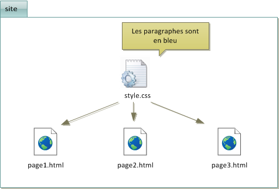

Le Cascading Style Sheets (CSS) : Ce que c'est et comment ça fonctionne

Qu'est-ce que le CSS ?
Le Cascading Style Sheets (CSS) est un langage de feuille de style utilisé pour décrire la présentation visuelle des pages web. Alors que HTML structure le contenu, CSS permet de contrôler l'apparence de ce contenu, notamment les couleurs, les polices, les marges, les positions, et bien plus. CSS sépare la présentation du contenu, facilitant ainsi la gestion et l’optimisation du design des sites web.
Comprendre le CSS
CSS fonctionne grâce à des règles qui ciblent des éléments HTML spécifiques afin de leur appliquer des styles. Une règle CSS est composée de deux parties : un sélecteur et une déclaration. Le sélecteur identifie l'élément HTML auquel s'applique le style (par exemple, p pour un paragraphe), tandis que la déclaration définit les propriétés à modifier, telles que la couleur, la taille de police ou les marges.
Les trois méthodes d'intégration de CSS
- CSS en ligne : Le style est directement ajouté aux éléments HTML à l’aide de l'attribut style. Cela peut être pratique pour des modifications rapides mais n'est pas recommandé pour des projets plus complexes.
- CSS interne (ou intégré) : Les règles CSS sont incluses dans la section head du fichier HTML, dans une balise style. Cela permet de garder le style centralisé dans un même document, mais cela devient difficile à gérer pour les grands sites
- SS externe : La méthode la plus courante et recommandée consiste à lier un fichier CSS externe à une page HTML. Cela permet de séparer complètement le style du contenu et de réutiliser une même feuille de style pour plusieurs pages.